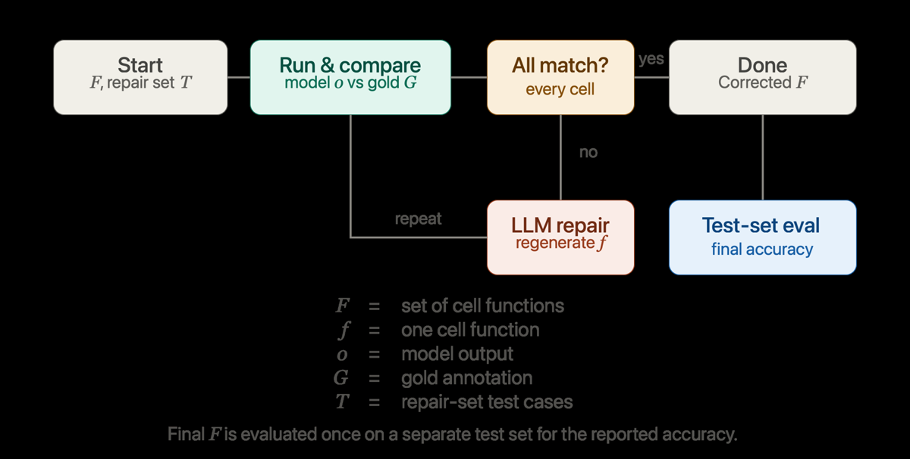
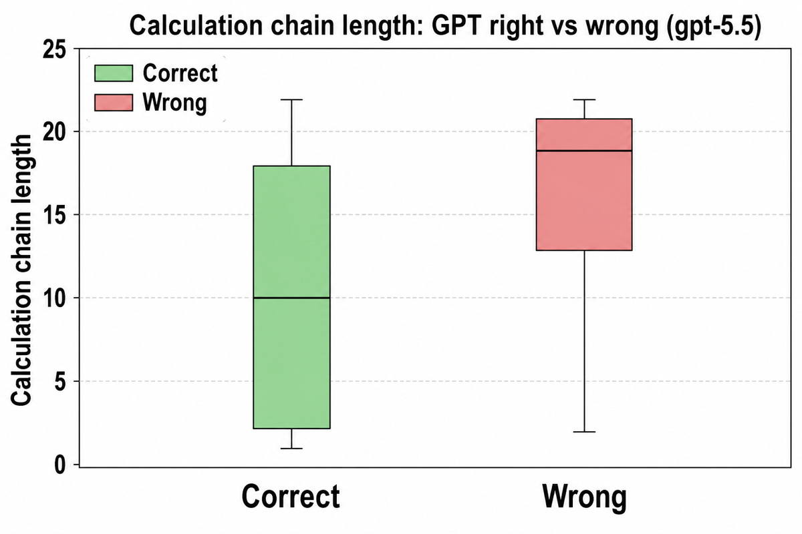
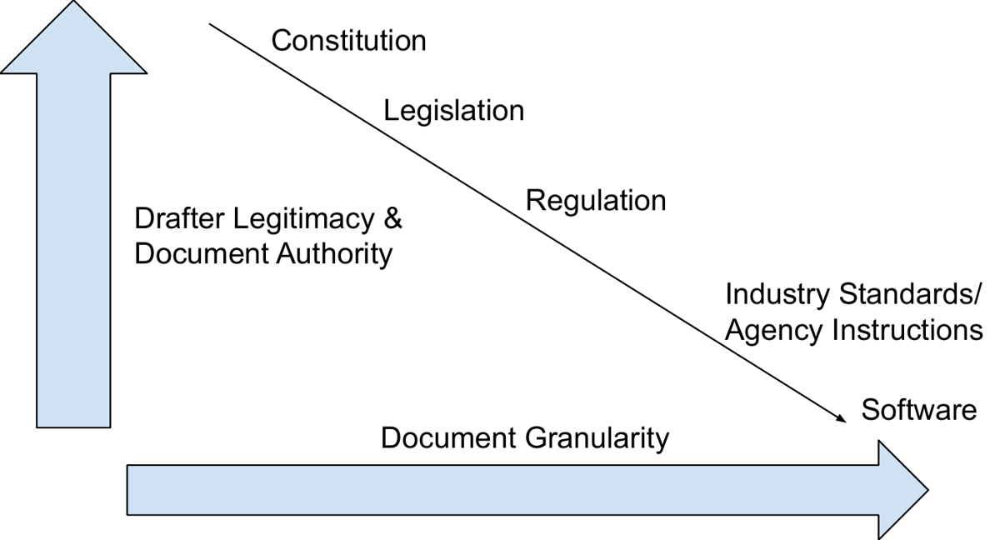

TL;DR : les formulaires fiscaux IRS sont transformés en programmes Lean 4 exécutables, une fonction par cellule, et la synthèse LLM est corrigée itérativement par comparaison cellule par cellule contre des retours fiscaux humains (OpenTaxSolver) ; la formalisation gelée est ensuite évaluée sur 51 retours écrits indépendamment par des CPA (TaxCalcBench).
Claim principal, tel que formulé : « Although the most advanced LLM achieves only 66% accuracy, \ours achieves 100% cell-level and form-level accuracy on 51 held-out returns » [Abstract]. Précisément : sur TY2025, GPT-6 en calcul direct avec recherche web atteint 66,0 % de retours exacts (strict), tandis que le pipeline Law&Order instancié avec GPT-6 atteint 100 % au niveau cellule et au niveau retour [Tab. 1]. ⚠️ Le même tableau montre que le self-debugging global (baseline) atteint aussi 100 % avec GPT-6, et bat Law&Order sur 3 modèles sur 7 — le claim « 100 % » n'est donc pas attribuable à la contribution revendiquée (le feedback localisé).
⚠️ Intérêt pour nous : ce n'est pas un env RL, mais c'est le gabarit le plus net de « l'arithmétique du droit » — un domaine juridique où une vérité mécanique existe, décomposable en ~1 800 sous-objectifs vérifiables automatiquement, avec profondeur de raisonnement mesurée (0 à 30) donc curriculum gratuit.
f_i : X_i → C_i, c_i : ℕ | ℝ | {true,false} ; logique volontairement omise ; représentation agnostique au langage cible (« Epilogue, C++, Lean, Python ou DSL ») [§3.2].
3. Instruction-grounded program synthesis : le LLM reçoit (1) le formulaire, (2) le texte de la notice officielle (i1040gi.pdf), (3) les signatures, et remplit chaque sorry [§3.3].
4. Repair set-assisted verification and correction : exécution, comparaison cellule à cellule, régénération de la seule fonction fautive, boucle jusqu'à accord total [§3.4, Alg. 1].Main.lean often keeps raw floats on regular example inputs and only calls wholeRound when isTaxCalcBenchInput s is true » [App., Tab. 17 et Tab. 19] : la convention d'arrondi du harness d'évaluation fuit dans la boucle de réparation ; (b) TaxCalcBench et OTS sont publics et antérieurs, donc les baselines « w/o formalization » sont potentiellement contaminées — le papier ne discute pas ce point.Template.lean dont chaque def cell_* a pour corps sorry ; le contrat de l'API de parsing ExampleParse ; la notice du formulaire (« instruction booklet ») ; les notes inline {...} du template et les commentaires -- ; un cell_breakdown par cellule (nom de la fonction + texte du formulaire la décrivant) [App. Tab. 13] ; en réparation, la liste blanche des cell_* disponibles [App. Tab. 12] et le hint de localisation.``lean, sans prose. Contraintes dures recopiées : première commande non-commentaire exactementimport ExampleParse; interdiction d'importerMathlib/Std; interdiction desorrydans la soumission ; interdiction de changer noms et signatures ; longue liste d'API bannies (List.enum,mapIdx,String.trim,Float.toInt, indexation prouvéexs[i]…) [App. Tab. 10]. Deux sous-actions structurées : réparation ciblée d'une cellule [REPAIR_PROMPT] et résolution de référence avant retournant du **JSON**, "reason": "brief"}` [FORWARD_REF_REPAIR_PROMPT].entryValues : String → ParsedInput → List String, entryText : String → ParsedInput → String, entryNumber : String → ParsedInput → Float, entryInt : String → ParsedInput → Nat, entryBool : String → ParsedInput → Bool, plus cleanLine, words, trimString, toFloat? : String → Option Float, et parseInputFile (path : System.FilePath) : IO ParsedInput [App. Tab. 10]. Helpers métier apparaissant dans le code généré : notLessThanZero, smallerOf, largerOf, wholeRound, fmt, line, textLine [Fig. 2 du corps, App. Examples].lake env lean --run sous Lean 4.29.1 [App. Tab. 10]. Déterminisme imposé explicitement : « Emit deterministic trace lines only ». Le programme est un binaire CLI prenant un fichier d'entrée et imprimant une trace (main (args : List String) : IO UInt32, forme exacte imposée [App. Tab. 10]). Pas de sandbox/conteneur mentionné, pas de timeout, pas de politique de reset → non précisé.set_option linter.unusedVariables false.
3. Comparaison ordonnée et stoppante : « The checker compares emitted cells in order. An early wrong label causes an immediate failure » [App. Tab. 10].def cell_16_l7_capped_tips (p : ParsedInput) : Float := smallerOf (cell_15_l6_total_tips p) 25000.0
def cell_18_l9_tips_phaseout_threshold (p : ParsedInput) : Float := if cell_02_filing_status p = FilingStatus.marriedJoint then 300000.0 else 150000.0
def cell_19_l10_tips_excess (p : ParsedInput) : Float := notLessThanZero (cell_17_l8_magi_tips p - cell_18_l9_tips_phaseout_threshold p)
def cell_20_l11_tips_phaseout_units (p : ParsedInput) : Float := Float.ceil (cell_19_l10_tips_excess p / 1000.0)
def cell_21_l12_tips_phaseout_reduction (p : ParsedInput) : Float := cell_20_l11_tips_phaseout_units p * 100.0
def cell_22_l13_tips_allowance (p : ParsedInput) : Float := notLessThanZero (cell_16_l7_capped_tips p - cell_21_l12_tips_phaseout_reduction p)
À retenir : plafond, seuil conditionné au statut, excédent planché à zéro, dégressivité par tranche de 1 000 $ avec ceil. C'est exactement la morphologie d'un barème juridique européen (quotient familial plafonné, décote, barème Macron) — voir §9.
C'est la section la plus importante du papier pour nous. Réponse courte : vérification par exécution symbolique contre des traces humaines, cellule par cellule, avec un audit formel du vérifieur lui-même qui révèle ~2 % d'erreurs dans l'or.
Label = value pour le numérique, Label: value pour texte et cases à cocher) contre la trace or G [Alg. 1, Fig. 1, App. Tab. 10].
2. Étage juges LLM, présent dans le code mais JAMAIS évalué : prompts de correspondence localization (batch et single-cell), de self-consistency critique, et de localisation par aller-retour Lean → anglais → comparaison d'équivalence en langue naturelle [App. Tab. 20, 22, 23, 24, 26, 27, 28]. ⚠️ Aucun résultat, aucune mesure d'accord, aucune ablation ne concerne ces juges : ils existent en annexe et sont absents de toute table. Verdict : ingénierie non documentée, à ne pas créditer.
3. Étage preuve formelle, utilisé comme audit a posteriori : sur 50 cellules échantillonnées uniformément, Claude Code construit des preuves Lean 4 d'équivalence avec l'implémentation or, ou un contre-exemple [§4.4].cell Accuracy = cellules correctes / cellules évaluées ; Return Accuracy = formulaires à zéro cellule fausse / formulaires totaux [§4.2] — donc crédit partiel au niveau cellule, binaire conjonctif au niveau retour. La démonstration que l'une implique l'autre est explicite : « Because tax forms define a deterministic computation graph, agreement at every intermediate cell implies agreement for the repair-set examples on the final tax outputs » [§3.4]."SpouseDOB" alors que l'entrée est "SpouseDOB:", donc un conjoint né en 1956 n'est jamais compté comme ayant 65 ans ou plus ; native_decide prouve la divergence [Fig. 8b]. Le bug est invisible tant qu'aucun cas de test n'a de conjoint âgé.MATCH ALL / MISMATCH <cell_name> + explication réparable par un autre modèle [App. Tab. 20] ; MATCH/MISMATCH pour la version single-cell [App. Tab. 22]. Garde-fou notable dans la critique de self-consistency : « Do not use external oracles, gold answers, or test traces — judge only from the instructions and the Lean code you see » [App. Tab. 23].def cell_* … according to the form instructions below (not by guessing from examples or gold outputs) » et « Prefer simple Float arithmetic and small helper functions over hard-coded examples » et « Do not use C code, gold outputs, JSON, or APIs that are not imported or defined » [App. Tab. 10, Tab. 14]. ⚠️ Avec un repair set d'au plus deux entrées par formulaire [§5.4], le hard-coding est trivialement payant et rien dans le pipeline ne le détecte, sauf l'audit par preuve sur 50 cellules (2,7 % des 1 847). La résistance au hacking n'est donc pas établie, elle est postulée.Signal exploitable en RL ? Oui, directement, et c'est ce qu'il faut retenir : par cellule et par cas de test, un booléen déterministe, calculable sans humain, à coût ~nul une fois l'oracle écrit, avec (a) densité ~1 800 signaux par formulaire-année, (b) un ordre topologique donnant une localisation canonique du premier échec, (c) une graduation de difficulté native (profondeur 0→30, opérateurs 0→200+). Les auteurs ne font aucun RL : la boucle est du rejection-sampling + réparation en inférence, sans gradient. La conversion en GRPO est immédiate (reward = fraction de cellules exactes, ou reward dense par cellule réparée) — voir §9.
Le papier ne nomme jamais « reward hacking », mais son annexe en est un catalogue de terrain. Chaque cas : comportement → détection → correction.
wholeRound) → écart exact de 0,01 $, 0,10 $ ou 1,00 $ sur une cellule aval, ou centimes attendus contre montant entier → famille de quatre hints dédiés insérés dans le prompt de réparation, qui renvoient vers la cellule amont fautive et non vers la cellule détectée : « A $1 tax mismatch on a downstream line often comes from a $0.10 AGI drift caused by rounding L6b or another upstream cell » [App. Tab. 17, Tab. 19]. ⚠️ Leçon générale : avec un vérifieur exact sur un graphe de calcul, l'erreur se manifeste loin de sa cause — la localisation naïve (« la première cellule qui diffère ») vise parfois à côté. Et le correctif est spécifique à la convention de l'or (isTaxCalcBenchInput), ce qui est de la fuite d'oracle plus que de la formalisation.FORWARD_REF_REPAIR_PROMPT, qui impose une liste blanche de cell_* antérieures et une sortie JSON de remplacements [App. Tab. 20]."SpouseDOB" au lieu de "SpouseDOB:" → non détectée par l'exécution (aucun cas de test avec conjoint ≥ 65 ans), détectée seulement par la preuve Lean + native_decide → aucune correction systématique proposée [Fig. 8b]. C'est le faux positif archétypal du vérifieur par tests.cell_* function, helper, render, and main exactly as they are » [App. Tab. 17].Comportement émergent positif : le pipeline corrige la loi en retour — l'audit formel d'une formalisation a trouvé un bug dans le logiciel de référence humain [§4.4]. C'est l'argument le plus vendeur pour un acheteur juridique.
Quasiment tout est non précisé. Aucun débit, aucune parallélisation, aucun coût par itération ou par rollout, aucune durée. Ce qu'on peut lire :
- Boucle synchrone par construction (Alg. 1 : exécuter tout le graphe sur tous les cas, puis réparer).
- Un seul plafond : 20 itérations [App. « Hyper-parameters »].
- Toolchain : Lean 4.29.1, lake env lean --run, un seul module importable ExampleParse [App. Tab. 10] — environnement volontairement minimal, donc léger à conteneuriser.
- Indice d'optimisation de coût : versions batchées des prompts de vérification (CORRESPONDENCE_BATCH_PROMPT, LEAN_TO_NL_BATCH_PROMPT, NL_EQUIVALENCE_BATCH_PROMPT) à côté des versions cellule par cellule [App. Tab. 20, 24, 26] → les auteurs ont visiblement buté sur le coût du juge par cellule, sans le documenter.
- Goulot non discuté mais évident : le fichier complet (> 10 000 lignes [Fig. 2]) est réémis à chaque réparation → coût de génération quadratique en nombre de réparations.
| Chiffre annoncé | Où il est annoncé | Source dans le papier | Verdict |
|---|---|---|---|
| « the most advanced LLM achieves only 66% accuracy » | Abstract, §1, §6 | Tab. 1, GPT-6, « w/o formalization + WS », Correct returns (strict) = 66,0 % | sur-généralisé : vrai pour un seul réglage. Même ligne : lenient 78,0 %, cellule 88,6 %. Sans web search, GPT-6 tombe à 38,0 % ; le chiffre le plus défavorable aurait aussi pu être choisi. Le « 66 % » n'est donc ni un plafond ni une moyenne. |
| « \ours achieves 100% cell-level and form-level accuracy on 51 held-out returns » | Abstract, §1, §6 | Tab. 1, ligne GPT-6 × Law&Order = 100 % / 100 % / 100 % / 100 % | sur-généralisé : vrai pour GPT-6 sur TY2025 uniquement. Les six autres modèles avec Law&Order : 95,0 (GPT-5.5), 85,0 (Opus 5.5), 72,5 (Fable 5.1), 75,0 (Gemini 3.8 Flash), 85,0 (Kimi K3), 0,0 (Qwen 3.6 8B) en strict [Tab. 1]. |
| Implicite : Law&Order > self-debugging | Abstract (« compared with using an LLM alone »), §1 | Tab. 1 : self-debugging bat Law&Order sur Opus 5.5 (95,0 vs 85,0), Fable 5.1 (92,5 vs 72,5), Kimi K3 (95,0 vs 85,0) ; égalité sur GPT-6 (100/100) et Gemini 3.8 Flash. Tab. 2 (TY2024) : self-debugging 72,5 vs Law&Order 35,3 sur GPT-5.5 | contredit sur la moitié des modèles. §5.2 le reconnaît explicitement : « \ours does not consistently outperform conventional self-debugging ». Le résumé ne le mentionne pas. |
| « across 26 tax forms » | §1 (contributions) | Tab. 3 énumère bien 26 formulaires ; Fig. 4 « pooled across all 26 benchmark forms » | contredit par la conclusion : §6 écrit « across 30 tax forms ». 26 vs 30. |
| 1 019 cellules synthétisées / 1 847 cellules | Tab. 3 et §A.2 vs Fig. 4 et Fig. 9 | Tab. 3 : « 28 source files and 1,019 synthesized cells » ; Fig. 4 : « N=1,847 » ; Fig. 9 : « 1,847 cells from 28 tax forms » ; texte de Fig. 9 : « 1,847 cells from 26 tax forms » | incohérent / introuvable : aucune définition ne réconcilie les deux (cellules d'entrée comptées ou non ? formulaires 26 ou 28 ?). La somme de la colonne « Cells » de Tab. 3 vaut bien ~1 019, et la somme des profondeurs de Tab. 4-5 vaut 1 847 : les deux dénombrements existent mais le papier ne dit jamais lequel sert de dénominateur à cell Accuracy. |
| « seven language models » | §4.1 « Models » | La liste qui suit en nomme 7 (GPT-6, Opus 5.5, Fable 5.1, Gemini Flash 3.8, Gemini 3.1 Pro Preview, Kimi K3, Qwen 3.6 8B) ; les tableaux en évaluent 7 mais pas les mêmes : GPT-5.5 (Medium) y figure et Gemini 3.1 Pro Preview n'y figure nulle part | contredit : le modèle qui porte l'essentiel du claim (GPT-5.5, 17,5 → 95,0) n'est pas dans la liste des modèles, et un modèle listé n'est jamais évalué. |
| « GPT-5.5 : 17,5 % → 95,0 % strict ; 73,3 %/75,0 % → 99,3 % cellule » | §5.2 | Tab. 1, lignes GPT-5.5 | confirmé à l'identique. |
| « GPT-5.5 reaching 99.8 % » (test set) | §5.3 | Fig. 6a : plateau GPT-5.5 à 99,83 % ; mais Tab. 1 donne 99,3 % pour la même configuration | contredit (mineur) : 99,83 % vs 99,3 %. Deux mesures de « cell accuracy » sur le même réglage. |
| 43/50 équivalences prouvées, 7 contre-exemples, 6 erreurs modèle + 1 erreur de l'or (400 000 $ vs 200 000 $) | §4.4 | §4.4 seul ; exemples en App. Fig. 8 ; aucune table | confirmé (source unique, non tabulé, non reproductible en l'état). |
| Couverture : 94,6 % cellules / 44,0 % branches (repair TY2024) ; 98,6 % / 73,1 % (test) ; 93,3 % / 44,0 % puis 93 % / 73 % (TY2025) | §5.4 | §5.4 seul | confirmé (précision inégale : 93 % et 73 % sans décimale pour TY2025). |
| « IRS Direct File required $16 million and more than two years » | §1 | citation externe tigta2026directfile | introuvable dans le papier (non vérifiable ici ; à ne pas reprendre sans vérifier la source). |
| « more than 10,000 lines of Lean » | Fig. 2 | Fig. 2 seule | introuvable ailleurs : aucun décompte de lignes par formulaire, aucune table. |
Ablation annoncée (METHOD_INSTRUCTIONS « Empty in the ablation ») |
App., légende Tab. 14 | nulle part | introuvable : l'ablation est mentionnée dans une légende de prompt et ses résultats n'apparaissent dans aucun tableau ni paragraphe. |
| Modèle | w/o formalisation | w/o form. + WS | Direct translation | Self-debugging | Law&Order |
|---|---|---|---|---|---|
| GPT-6 | 38,0 / 83,2 | 66,0 / 88,6 | 95,0 / 99,3 | 100 / 100 | 100 / 100 |
| GPT-5.5 (Medium) | — | — | 17,5 / 73,3 | 37,5 / 75,0 | 95,0 / 99,3 |
| Claude Opus 5.5 | 40,0 / 83,6 | 64,0 / 89,0 | 52,5 / 89,3 | 95,0 / 99,0 | 85,0 / 97,6 |
| Claude Fable 5.1 | 40,0 / 83,5 | 48,0 / 84,4 | 55,0 / 93,9 | 92,5 / 98,5 | 72,5 / 95,2 |
| Gemini 3.8 Flash | — | — | 27,5 / 78,4 | 75,0 / 96,9 | 75,0 / 96,6 |
| Kimi K3 | 6,0 / 64,5 | — | 62,5 / 90,8 | 95,0 / 98,6 | 85,0 / 96,3 |
| Qwen 3.6 8B | — | — | 0,0 / 54,7 | 0,0 / 54,8 | 0,0 / 55,7 |
Écart absolu le plus parlant : +77,5 pts strict pour GPT-5.5 (17,5 → 95,0) ; −22,5 pts pour Fable 5.1 contre self-debugging (92,5 → 72,5). TY2024 [Tab. 2] : Law&Order n'égale jamais mieux que direct translation (GPT-6 100/100, Opus 5.5 92,2/92,2) et perd nettement contre self-debugging sur GPT-5.5 (35,3 vs 72,5).
METHOD_INSTRUCTIONS est annoncée en légende et jamais rapportée.isTaxCalcBenchInput cité dans le prompt de réparation [App. Tab. 17, 19] ; « strict » et « lenient » jamais définis dans le papier ; dénominateur de cell Accuracy ambigu (1 019 ou 1 847) ; juges LLM jamais validés.
Ce qu'il faut voir : la boucle est exactement un env RLVR à reward dense —Run & compare: model o vs gold G → All match? every cell → LLM repair: regenerate f → repeat, et une seule évaluation finale sur un test set jamais vu. Deux détails décisifs : le reward est évalué par cellule (every cell), pas sur la sortie finale, et la réparation régénère une fonction f, pas le programme. Remplacer la boîte « LLM repair » par un step de policy gradient, et on a un env RL juridique complet — c'est le pas que le papier ne franchit pas.

Ce qu'il faut voir : le failure mode central, et la mesure de difficulté la plus utile du papier. Médiane de la longueur de chaîne ≈ 10 pour les cellules correctes contre ≈ 19 pour les fausses [Fig. 3, §5.2] : l'erreur est concentrée sur les chaînes longues. Conséquence pour un curriculum : la profondeur de dépendance (0 à 30 [Fig. 4]) est un proxy de difficulté gratuit et calculable depuis la structure du formulaire, sans aucun rollout. ⚠️ Boîtes qui se chevauchent largement, aucun test statistique, un seul modèle.
Ce qu'il faut voir : l'argument de sélection du créneau, et la figure à reprendre telle quelle en interne. Deux axes croisés : « Drafter Legitimacy & Document Authority » (flèche verticale) contre « Document Granularity » (flèche horizontale), et une diagonale descendante Constitution → Legislation → Regulation → Industry Standards/Agency Instructions → Software. L'autorité décroît exactement là où la granularité — donc la formalisabilité — croît. Les auteurs formalisent les formulaires « because they are closest to software, permitting mechanical translation » [légende Fig. 7]. Traduction pour nous : le RLVR juridique n'est possible qu'au bas de cette échelle, et tout ce qui est au-dessus (ambiguïté, vague, lacunes — nommés dans la légende) reste hors de portée d'un vérifieur exact. Le papier ne traite pas le non-formalisable : il le contourne en choisissant la couche où il n'y en a pas.| Ingrédient | Choix du papier | Équivalent juridique (FR/EU) | Transfert | Ce qui manque |
|---|---|---|---|---|
| Source des tâches | Énumération mécanique des cellules de 26 formulaires IRS par regex sur PDF, auditée à la main [§3.1] | Cases des Cerfa (2042 et annexes, 2031, 2065, DSN), barèmes du BOFiP, tableaux de l'art. L.1235-3 C. trav. (barème Macron), barème de saisie des rémunérations (R.3252-2 C. trav.), barème des droits de succession | direct | Les Cerfa français sont moins auto-descriptifs que les formulaires IRS (la notice ne donne pas toujours la formule cellule par cellule) ; l'extraction regex devra être remplacée par une extraction assistée |
| Vérifieur | Exécution Lean + exact match cellule par cellule contre traces humaines ; audit par preuve sur 50 cellules → 2 % d'erreurs dans l'or [§3.4, §4.4] | OpenFisca (modèle socio-fiscal français libre, maintenu côté administration, avec jeux de tests YAML par article) joue exactement le rôle d'OpenTaxSolver ; pour la procédure, un moteur de calcul de délais écrit à la main | direct pour le socio-fiscal, adaptable pour la procédure | ⚠️ Mon évaluation, pas celle du papier : aucun équivalent de TaxCalcBench en France — il manque le second oracle, indépendant et écrit par des praticiens, qui est précisément ce qui rend l'éval de ce papier crédible |
| Harness / outils | Squelette Lean 4 à trous sorry, API de parsing minimale (entryNumber, entryBool…), trace texte ordonnée, lake env lean --run, warnings = échec [App. Tab. 10] |
Même squelette en Python/Lean sur un module calcul_delai, bareme, plafond ; trace Label = valeur par étape de raisonnement juridique |
direct | Rien de bloquant. Le confinement de l'API (un seul module importable) est la bonne idée à copier : il rend le reward comparable par simple diff de texte |
| Algo | Aucun RL. Rejection sampling + réparation localisée, ≤ 20 itérations [App.] | GRPO / RLOO avec reward = fraction de cellules exactes, ou reward dense sur la première cellule fautive | adaptable — c'est le pas à franchir | Le papier ne donne ni température, ni seeds, ni compute : rien à recopier côté optimisation |
| Curriculum | Remplissage en ordre topologique ; réparation de la première cellule fautive [App. Tab. 11] ; difficulté native = profondeur 0→30 [Fig. 2] et nb d'opérateurs 0→200+ [Fig. 6] | Profondeur de la chaîne de calcul juridique : « date de notification → point de départ du délai → report de jour férié → forclusion », ou « salaire de référence → ancienneté → plancher/plafond du barème → indemnité » | direct | Rien. C'est l'ingrédient le plus directement réutilisable, et il est gratuit : la difficulté se lit dans le graphe, sans rollout |
| Anti-hacking | Interdictions par prompt (« not by guessing from examples or gold outputs ») ; aucun test adverse ; ≤ 2 entrées/formulaire, 44 % de couverture de branches [§5.4, App. Tab. 10] | Même risque, aggravé : moins de cas d'or disponibles en droit français | non — à refaire entièrement | Il faut (a) générer des entrées par couverture de branches, pas par disponibilité (CUTECat / concolic est cité en related work [§2.2] et jamais utilisé), (b) auditer formellement un échantillon de cellules comme en §4.4, (c) mesurer le taux de hard-coding, que ce papier ne mesure pas |
| Ce qui reste non formalisable | Évacué par construction : les auteurs descendent au niveau le plus opérationnel de la pyramide [Fig. 7] et ne traitent ni l'interprétation, ni la qualification des faits, ni le conflit de normes | Qualification, appréciation in concreto, proportionnalité, motivation d'une décision | non | Le papier n'offre strictement rien ici. Il ne faut pas le lui reprocher : il prouve par l'exemple que le créneau vérifiable existe et qu'il est plus large qu'on ne croit (26 formulaires, 1 800 règles, 2 juridictions-niveaux) |
Branches du droit français ou européen ayant la même propriété (⚠️ mon analyse, absente du papier) — critère : une vérité mécanique existe, le résultat est un nombre ou une date, et un graphe de dépendances relie les étapes.
Ce que coûterait l'équivalent. Le papier ne rapporte aucun coût — ni heures, ni $, ni tokens (cf. §6) : il est muet là-dessus parce qu'il n'a rien payé, les deux oracles préexistaient. C'est la leçon de coût la plus importante : le coût de l'env est le coût de l'oracle, et il se mesure en « existe-t-il déjà ? ». Structure du coût à prévoir, sans chiffre inventé : 1. Socio-fiscal FR : coût marginal, OpenFisca fournit à la fois le programme de référence et des jeux de tests par article → le rôle d'OTS est tenu gratuitement. Reste à construire le second oracle indépendant (l'équivalent TaxCalcBench) : des déclarations complètes annotées par des praticiens. Référence de taille utile : TaxCalcBench = 51 retours suffisent à atteindre 73 % de couverture de branches [§5.4]. 2. Délais / barèmes non couverts : coût plein. Il faut écrire le programme de référence et les traces or. Le papier donne le bon ratio d'effort : ≤ 2 cas par formulaire suffisent à exercer ~94 % des cellules mais seulement 44 % des branches [§5.4] → budgéter les cas d'or par branche, pas par règle. 3. Audit du vérifieur : non négociable. §4.4 montre 1 erreur d'or sur 50 cellules échantillonnées. Un audit par preuve (ou double annotation) sur un échantillon est le seul moyen de connaître le plancher de bruit du reward. Sans lui, on ne sait pas si un plateau à 98 % est une limite du modèle ou de l'or.
Meilleur ingrédient à transposer : la décomposition en cellules avec vérification par cellule et localisation de la première cellule fautive. Pas le « 100 % », pas Lean, pas la boucle de réparation. Raison : (a) c'est ce qui transforme un reward binaire et creux (« la déclaration est-elle juste ») en ~1 800 signaux denses par formulaire-année ; (b) c'est le seul ingrédient que le papier étaye réellement — les courbes [Fig. 5, 6] montrent que le feedback global régresse de 99,83 à 43,80 % là où le feedback localisé est monotone ; (c) il est indépendant du langage cible, les auteurs le disent explicitement (« Epilogue, C++, Lean, Python ou DSL » [§3.2]) ; (d) la profondeur de dépendance vient avec, et donne un curriculum sans rollout.
Expérience minimale : prendre une branche FR à oracle existant (barème Macron + indemnité légale + computation des délais associés, soit un graphe de quelques dizaines de cellules), écrire le squelette à trous et 2 cas or par règle, puis comparer trois conditions à modèle et budget appariés — (i) réponse directe, (ii) formalisation + feedback global sur la sortie finale, (iii) formalisation + feedback localisé par cellule — et mesurer la précision cellule et la précision « dossier entier », sur un jeu de test écrit par un juriste autre que l'auteur des cas d'or. Résultat attendu, par analogie avec [Tab. 1] : (iii) ≫ (ii) pour un modèle moyen, (iii) ≈ (ii) pour le meilleur modèle. Deux mesures que le papier ne fait pas et qu'il faut ajouter : taux de hard-coding (relancer les programmes acceptés sur des entrées hors des branches couvertes) et taux d'erreur de l'or (audit d'un échantillon). Coût dominé par l'écriture de l'or, pas par le compute.
Question à poser en interne chez GDM : avons-nous, pour une seule branche du droit, deux sources de vérité indépendantes — un moteur de calcul de référence et un jeu de dossiers annotés par des praticiens qui ne l'ont pas écrit ? C'est la condition exacte qui rend ce papier évaluable, et c'est elle, pas l'algorithme, qui détermine si un env RLVR juridique est constructible pour Harvey LAB / Vals. Sous-question : si nous ne l'avons pas, est-il moins cher de générer des cas par couverture de branches (concolic, cf. CUTECat cité et inutilisé [§2.2]) que d'acheter des heures d'avocat ?